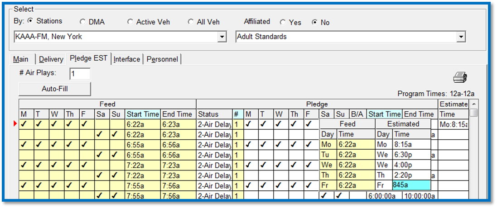

Estimated Times
If your affiliate is set up with an ROS agreement, they will have to manually enter their aired dates and times on the CSI Electronic Affidavit System affidavit screen. However, it is possible to use the Estimated Time feature to pre-populate the aired times that will appear on the web affidavit. This can usually be done if the affiliate generally airs their ROS spots at the same days and times every week. By having estimated times defined for ROS spots, the affiliate will not have to type in aired dates and times for each spot, saving time and effort.
Example:
Break 1 is Fed at 7:14a with an estimated time of 8:30a and the break contains two :30 spots.
The web log and affidavit will display the first spot at 8:30a and the second at 8:30:30a.
To enter estimated times for a delayed pledge, click in the “Estimated” field on the right of the Pledge screen and enter the days and times for each avail line based on when the affiliate typically airs their spots.

When entering estimated times, the system will not let you enter an air time outside of the defined daypart.
Depending on how the Site Options setting “Default to estimate day” is set, the estimated day field will either be blank (if it is unchecked) or default to the feed day (if it’s checked) when clicking in or tabbing to the day. The estimated time fields will be blank by default. Once you begin entering estimated dates and times for an avail, you must enter both an estimated day and an estimated time to save the agreement. If either is missing, the system will produce a warning message indicating what is missing and will not allow the agreement to be saved until the missing data has been entered. That does not mean estimated times and days must be entered for all avails, only that if an estimated time or day is entered for a fed date and time, both the estimated day and the estimated time must either be entered, or both must not be entered, in order to be able to save the agreement.